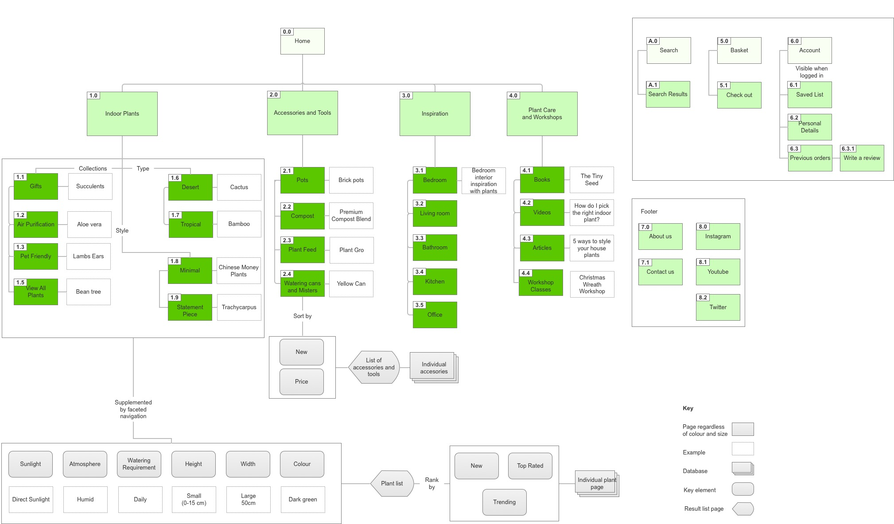

Designing a user friendly plant shop website
Designed a use-friendly website based on information architecture requirements. Paid close attention to how information is organized and labelled, as well as how the website supports navigation and helping users find and discover the information they need.
Domain model
.png)
Two plant store owners were recruited to take part in the interviews as experts on the subject who could provide in-depth knowledge of plants. Six people who had an interest in owning plants were also recruited as potential users of the site. All the information obtained from the interviews were written down simple sentences with noun and verb to identify entities and their relationships with one another. This information was then turned into a Domain Model where the three key concepts are that when new ‘plant buyers’ are thinking of purchasing a ‘plant’ they have a set of ‘requirements’ the plant has to fulfil. Each of the interviewees stressed that there were several requirements they had when deciding to buy plants.
Sitemap

Using the information gathered from the domain model, I created a sitemap. During the interviews the users struggled to articulate exactly what plant they would purchase therefore the organization scheme aims to supports users in going through the process of finding information and learning more about plants as they use the site.
A closed card sort was then conducted with 12 participants to ensure that the labels and groupings of the pages were clear. The feedback was then used to make labels clear for users.
User Journey Flowchart

The user journey was created to map how users would go through the site to complete an important task.
Wireframes
Search page

The search bar allows auto-complete to help the user find related keywords or phrases. This feature allows users to discover more plants and it encourages exploratory behaviour. The faceted navigation allows users to narrow down based on attributes that are important to users. The user will be able to rank plants based on whether they are trending, new, or highly rated, these are filters that are very important to new plant owners.
Product page

As a browsing aid, I used breadcrumbs to help users know where they are on the site and where they can go. Users will receive a recommendation for a plant that has similar attributes to the ones they are currently looking at. Instructions on how to look after plants will also be given in the product page, as during the domain modelling interviews, potential users stated they would need more guidance on this. Users will be able to save plants to encourage ‘re-finding’ behaviours.
Inspiration page

Each room inspiration page will have specific items recommended, in this case, it’s air-purifying plants since this is known to help people sleep better.
Article page

Users can click on the links that are tagged in the article and they will be taken to a list of articles which include these keywords
User testing
To evaluate the design, I carried out some user testing on four participants who did not have a lot of knowledge about plants but were interested in learning more. I conducted findability tasks because this accounts for 42% of usability problems. In the findability task, all of the participants were able to complete the task of finding a plant that ‘allowed you to breath better when you are home’, also known as air-purifying plants and they were able to add it to their saved list. The users were also asked in every page if they knew what the page was about and the users were able to correctly identify.